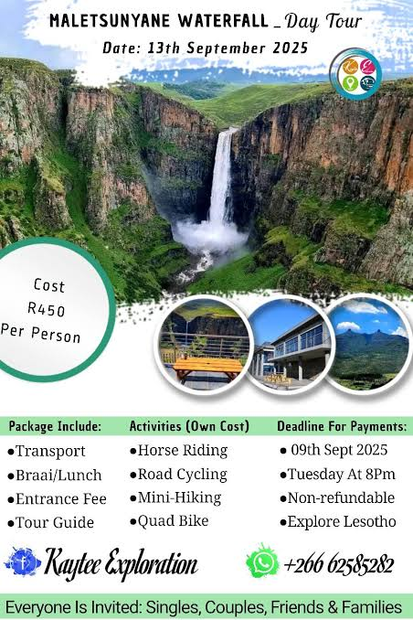

Services provided at Maletsunyane lodge
Maletsunyane Gardens Lodge in Lesotho offers a guest house experience with
private bathrooms, mountain views, and free on-site private parking. Each room includes
a bath, shower, tea and coffee maker, and a dining table.
Relaxing Amenities
Guests can unwind in the hot tub and enjoy the serene surroundings. The property features a wardrobe for added convenience.
Convenient Location
Located in Maletsunyane falls, the lodge is 75 mi from Ribaneng. Reception staff speak English, ensuring smooth communication for all
visitors.
Maletsunyane Gardens Lodge is located in Ribaneng.
This 4 Bedrooms House is suitable for tourists and travelers. It has several amenities
that would guarantee your comfort. These amenities include: Parking, Security/Safety, Child
Friendly, and several others. This is a good star rated property and has
over 6 reviews with the average score of 8.7 .
Coming to Ribaneng and needing a place to stay? Be it for work or for leisure,
consider staying at this House for your next visit, you will surely love it.
You can check the reviews and description of this
4 Bedrooms House if you want to learn more about this BedroomVillas place in Ribaneng.
These details are authentic, as they are provided by our partner, booking.com.
This Maletsunyane Gardens Lodge in Ribaneng is well
equipped and has all facilities that have been listed below. Please note that
these details were shared to us by booking.com for the listed “Maletsunyane GardensLodge”.

We solely rely on their shared details and are regarded as “accurate”. If you have any concernsabout the information or accuracy describing this House, please let us know.